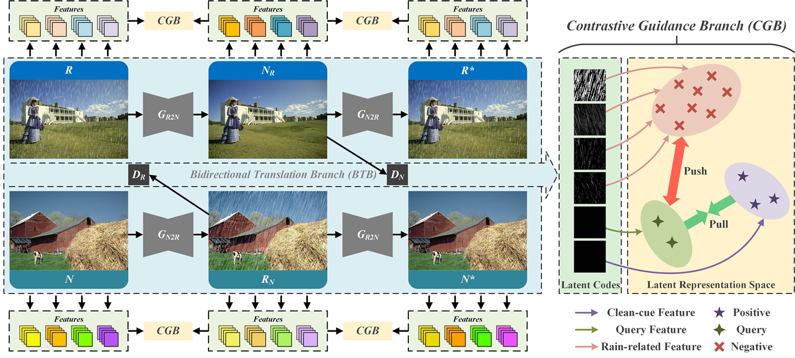
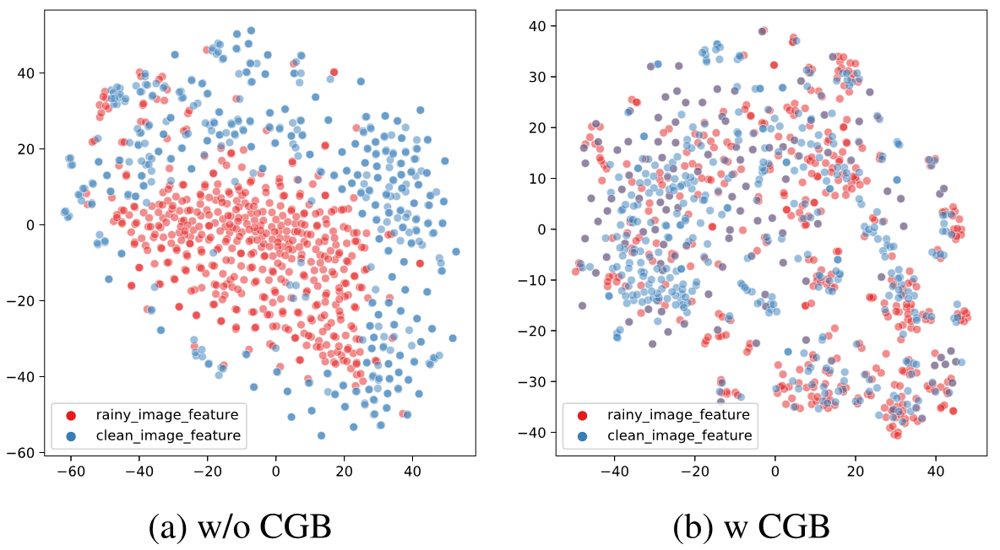

Unpaired Deep Image Deraining Using Dual Contrastive LearningXiang Chen1,2 Jinshan Pan2 Kui Jiang3 Yufeng Li1 Yufeng Huang1 Caihua Kong1 Longgang Dai1 Zhentao Fan11 Shenyang Aerospace University 2 Nanjing University of Science and Technology 3 Wuhan UniversityContact us: cv.xchen@gmail.com [ arXiv ] [ code ] |
Abstract
Learning single image deraining (SID) networks from an unpaired set of clean and rainy images is practical and valuable as acquiring paired real-world data is almost infeasible. However, without the paired data as the supervision, learning a SID network is challenging. Moreover, simply using existing unpaired learning methods (e.g., unpaired adversarial learning and cycle-consistency constraints) in the SID task is insufficient to learn the underlying relationship from rainy inputs to clean outputs as there exists significant domain gap between the rainy and clean images. In this paper, we develop an effective unpaired SID adversarial framework which explores mutual properties of the unpaired exemplars by a dual contrastive learning manner in a deep feature space, named as DCD-GAN. The proposed method mainly consists of two cooperative branches: Bidirectional Translation Branch (BTB) and Contrastive Guidance Branch (CGB). Specifically, BTB exploits full advantage of the circulatory architecture of adversarial consistency to generate abundant exemplar pairs and excavates latent feature distributions between two domains by equipping it with bidirectional mapping. Simultaneously, CGB implicitly constrains the embeddings of different exemplars in the deep feature space by encouraging the similar feature distributions closer while pushing the dissimilar further away, in order to better facilitate rain removal and help image restoration. Extensive experiments demonstrate that our method performs favorably against existing unpaired deraining approaches on both synthetic and real-world datasets, and generates comparable results against several fully-supervised or semi-supervised models.
Motivation
Due to the lack of suitable constraints for rain streaks and clean images, existing unsupervised deraining methods do not effectively restore high-quality derained results. Note that, previous methods mainly consider the mapping relationship in the image space but ignore the potential relationship in the feature space, which does not fully excavate the useful feature information for image deraining. Since the ground truth labeled data is not fully available, how to model the latent-space representation by exploring the relationship between the rainy inputs and clean outputs is important for the deep learning-based methods. In addition, given that clean images can be easily obtained, it is also important to develop an effective method that can explore properties of the clean exemplars to facilitate image restoration when paired data is not available. Ideally, we note that if a deep model can accurately restore a clean image from rainy one, the features that are for clean image reconstruction would have mutual information with the ones from the ground truth rain-free images by the same deep model. This motivates us to introduce a contrastive learning method to mining the mutual features of rainy images and clean ones in the deep feature space, so that we can use the features from the clean images to better guide the image restoration.
Framework
|  |
The overall framework of the proposed Dual Contrastive Derain-GAN (DCD-GAN). There are two cooperative branches, bidirectional translation branch (BTB) and contrastive guidance branch (CGB). In the feature space, images generated from close (positive) latent codes are visually similar, while images generated from far-away (negative) latent codes are visually disimilar. Our developed CGBs aim to learn a representation to pull similar feature distribution and push disimilar apart in the deep feature space. The constraint of CGB is enforced by encouraging the positives closer while keeping the negatives further away, so as to help the deraining generators guide correctly in transforming the rainy inputs to the clean outputs.
Visualization
|  |
The t-SNE visualization of features learned with/without our CGB. The red round point denotes the deep features extracted from rainy images for clean image reconstruction. The blue round points denote the deep features extracted from clean images. With CGBs, the embeddings of the features from the clean image and the rainy image have low distances in the latent space. Thus, using the rainy features by CGBs is able to generate clean images. Ideally, if a deep model can accurately restore a clean image from rainy one, the features that are for clean image reconstruction and the feature of ground truth rain-free images will completely overlap in the deep feature space. Obviously, with CGBs, these two types of features are pulled together, which become well distinguished and able to capture the relationship between the rainy domain and the rain-free domain.
Quantitative Results
|
Qualitative Results
 |
BibTex